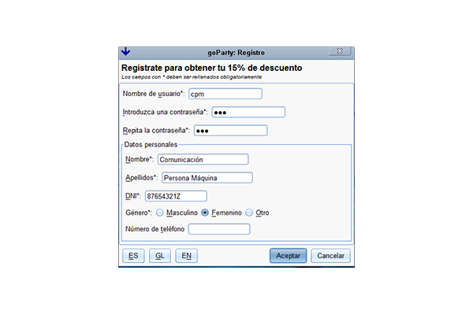

Para poder disfrutar de las ventajas de un usuario registrado primero debes registrarte con el formulario mostrado encima y al que se puede acceder desde la pestaña de inicio de sesión. El formulario de registro consta de los siguientes apartados y los señalados en negrita deben ser cubiertos adecuadamente para poder completar el registro.
Una vez hayas completado el formulario debidamente pulsa en Confirmar para crear tu cuenta, si todo está correcto serás redirigido a la pestaña de inicio de sesión donde pondrás emplear la cuenta recién creada para entrar en la aplicación.